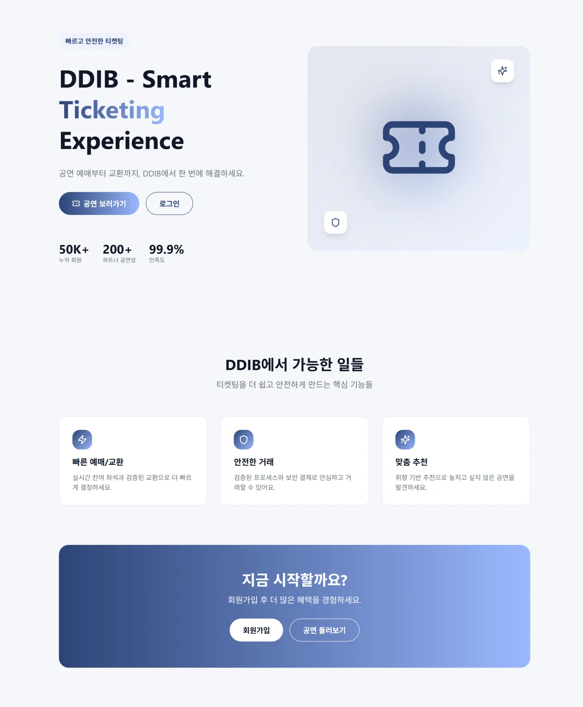
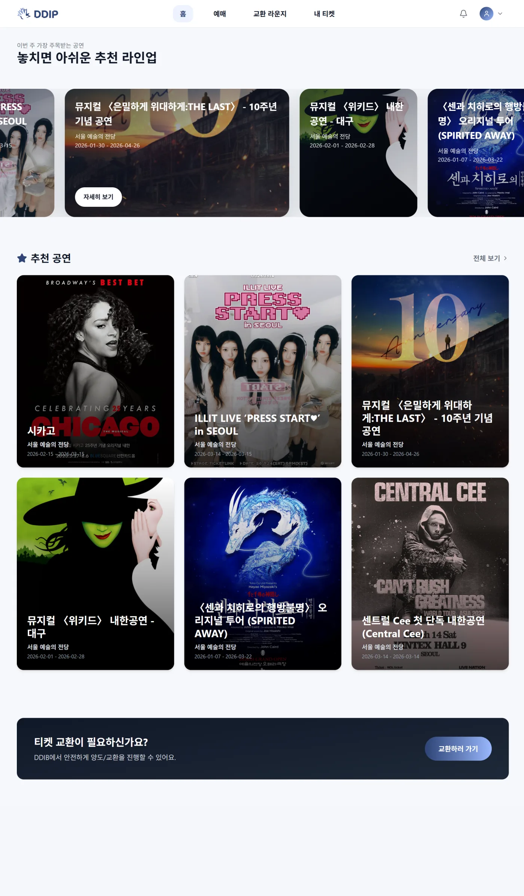
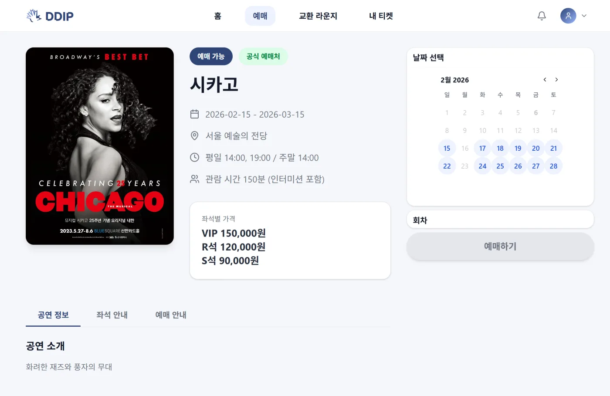
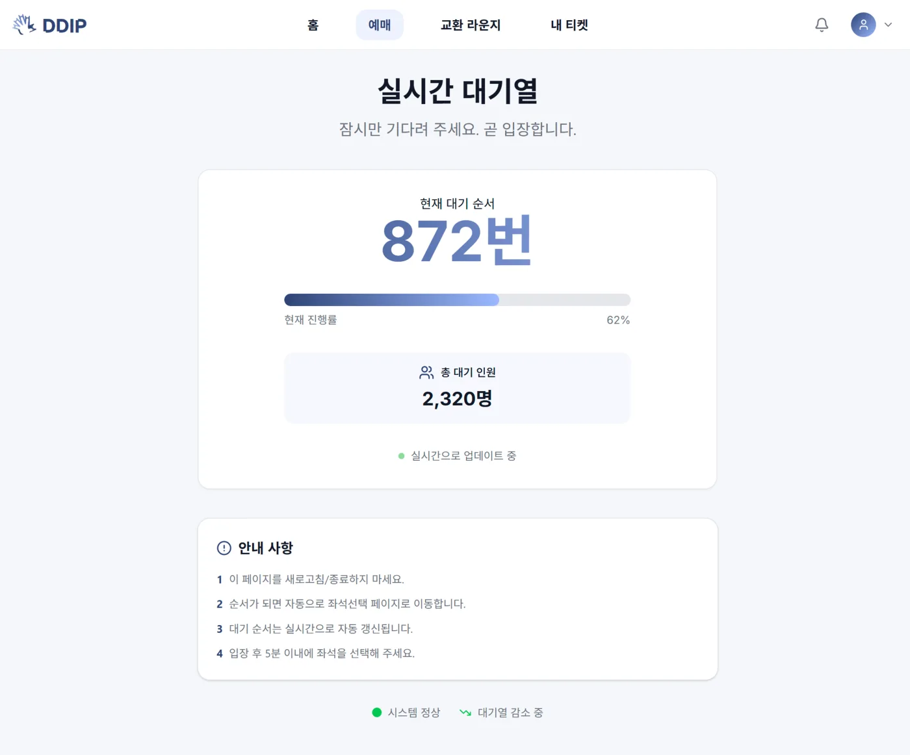
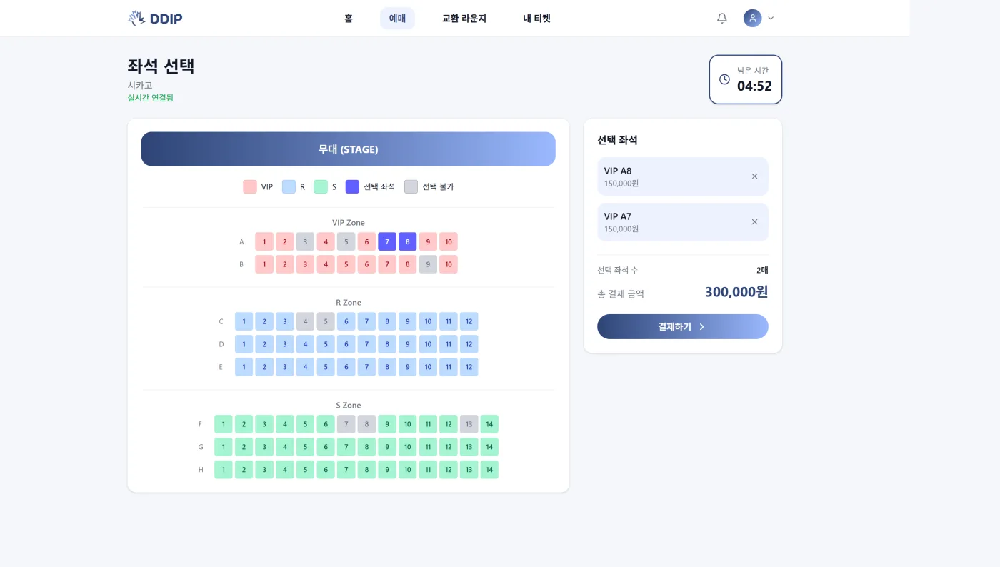
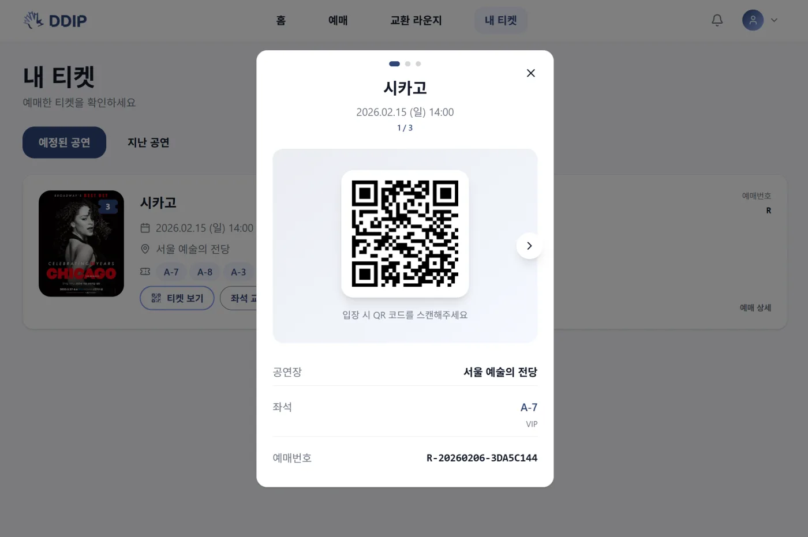
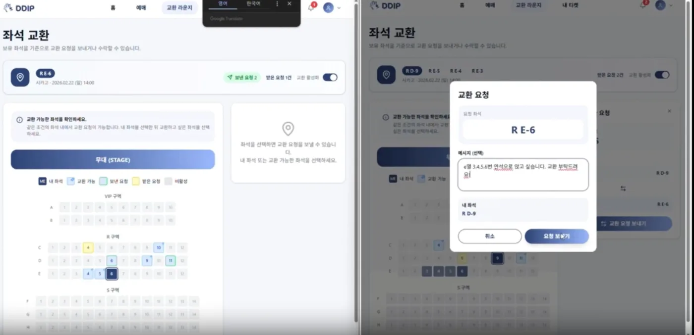
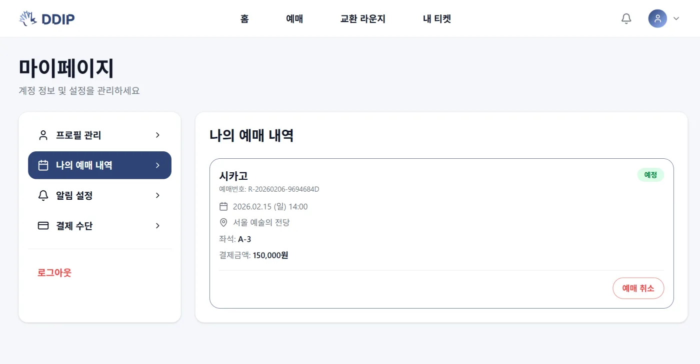

DDIB
실시간 좌석 예매와 교환 흐름을 다루는 서비스에서 프론트엔드 주요 화면과 API 연동 구조를 구현한 프로젝트입니다.

Overview
DDIB는 좌석 상태 확인, 선택, 예매, 교환 흐름을 실시간으로 연결하는 서비스입니다. 저는 프론트엔드 담당으로 주요 화면과 사용자 흐름을 구현하고, API 연동 과정에서 발생한 화면 연결 이슈를 정리했습니다.
단순히 화면을 만드는 것보다 사용자가 좌석 상태를 확인하고 다음 행동으로 자연스럽게 이동할 수 있도록 흐름을 끊기지 않게 만드는 데 집중했습니다.
My Role
- 좌석 예매와 교환 서비스의 주요 프론트엔드 화면을 구현했습니다.
- 좌석 상태 확인, 선택, 예매 진행 과정이 이어지도록 UI와 API 연동 구조를 구성했습니다.
- 테스트 과정에서 발견된 기능 동작과 화면 연결 문제를 빠르게 수정하며 서비스 안정성을 높였습니다.
Problem & Solution
좌석 예매 서비스에서는 사용자가 보는 상태와 실제 서버 상태가 어긋나면 신뢰가 바로 떨어집니다. 그래서 좌석 선택, 예매 진행, 교환 흐름에서 상태 변화가 화면에 자연스럽게 반영되는지를 우선적으로 확인했습니다.
API 응답과 UI 상태를 분리해 다루고, 사용자가 다음 행동을 판단해야 하는 지점에서는 화면 피드백이 끊기지 않도록 구성해 예매 흐름의 안정성을 높였습니다.
Result
최종적으로 좌석 상태 확인부터 예매와 교환으로 이어지는 핵심 사용자 흐름을 완성했고, 테스트 중 발견된 연결 이슈를 대응하며 실제 시연 가능한 수준으로 화면 안정성을 끌어올렸습니다.
주요 화면







